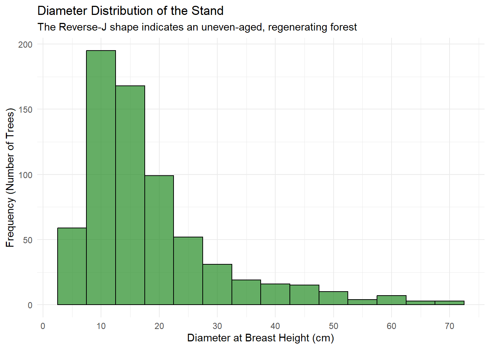
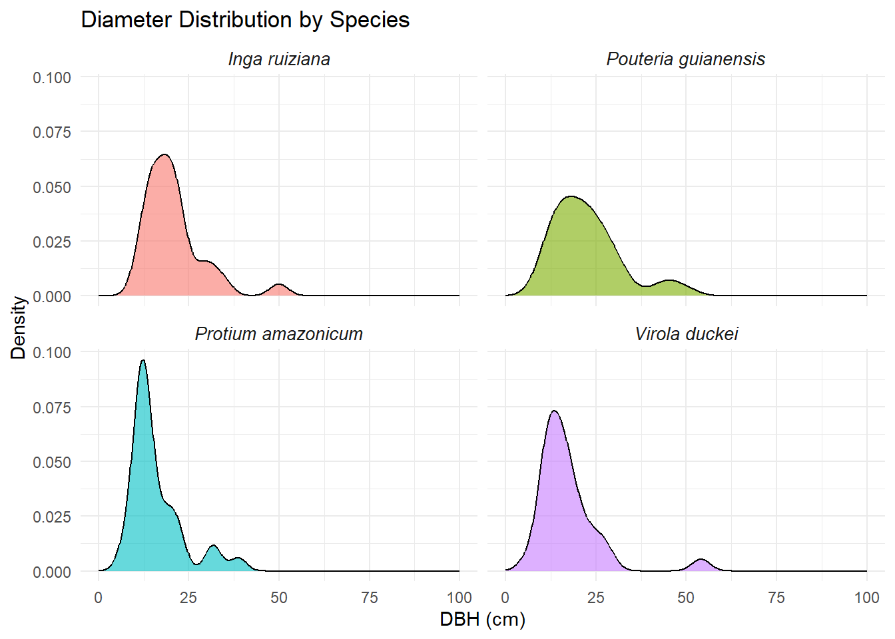
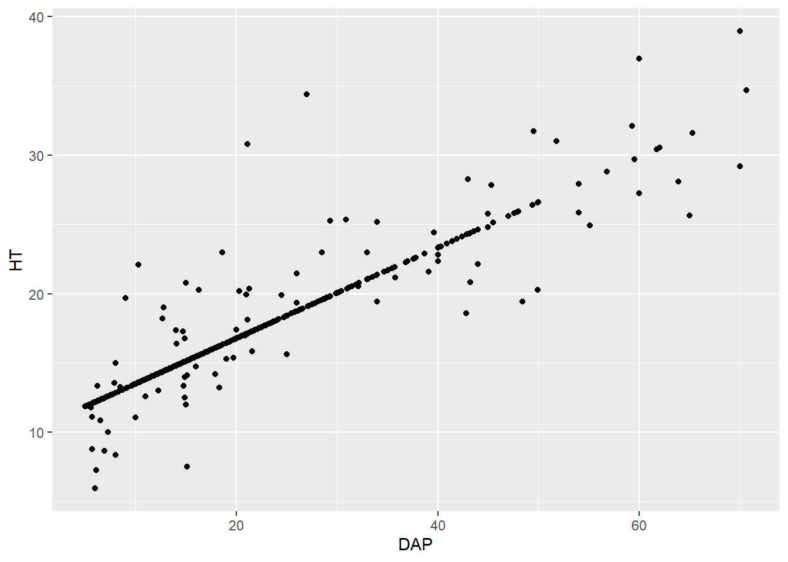
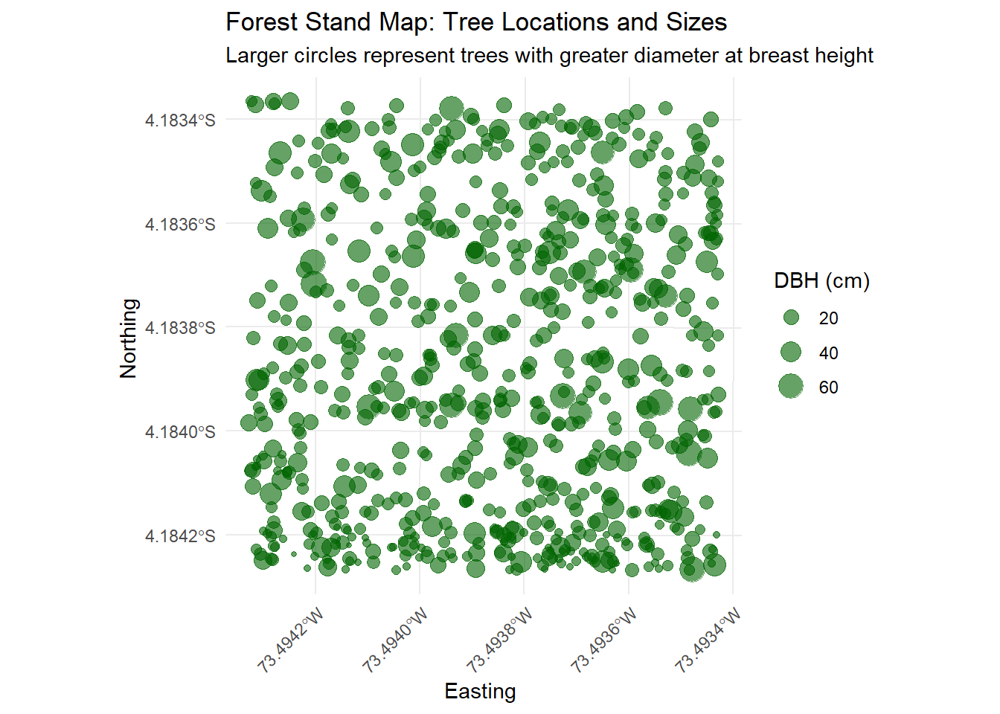
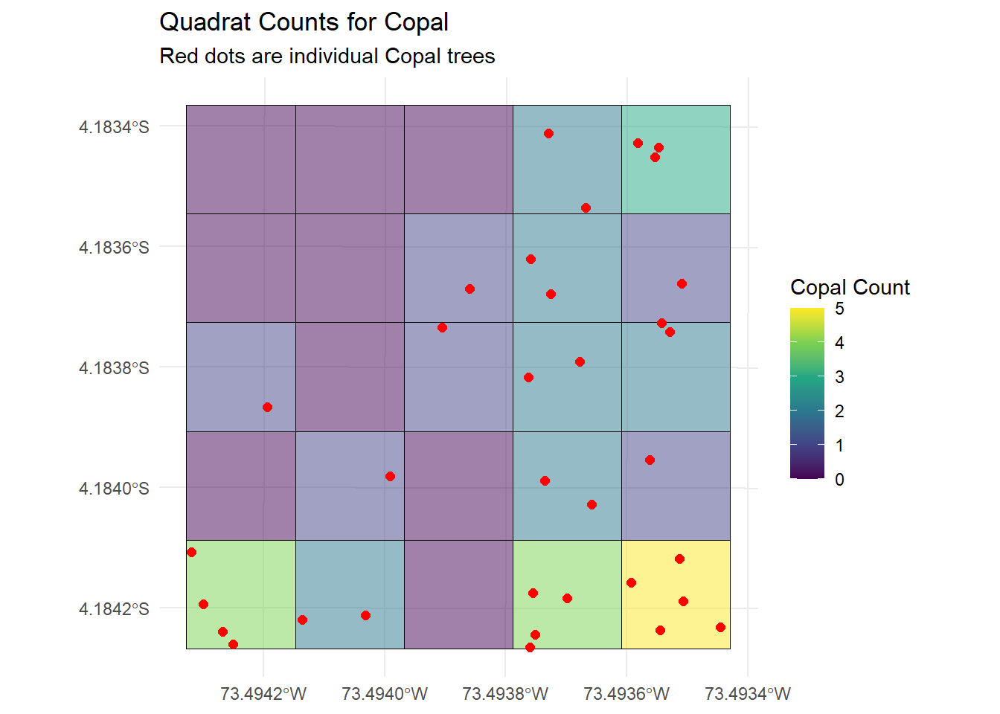
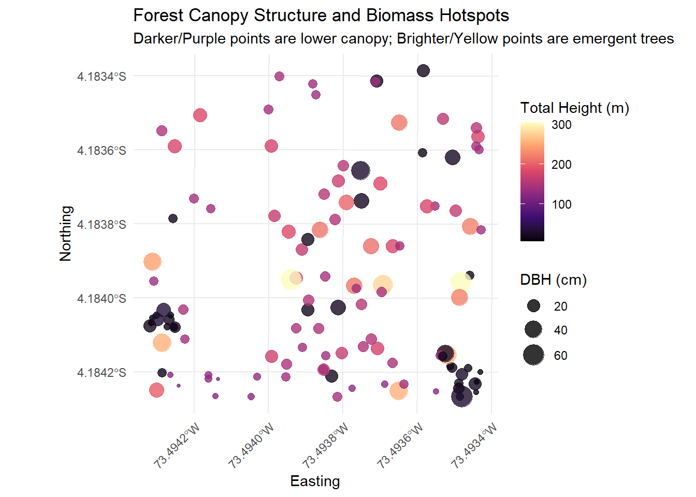

3 Chapter 3: Forest Stand Structure
3.1 Diameter at Breast Height (DBH)
The distribution of tree diameters is a key indicator of forest health, history, and successional stage. In natural, uneven-aged forests, we typically expect to see a “Reverse-J” curve. This means there are many small, young trees in the understory and progressively fewer large, older trees forming the upper canopy.
We can visualize this using a histogram of our DBH_cm column.
ggplot(inventory_clean, aes(x = DBH_cm)) +
# We use a binwidth of 5 cm, which is standard for forestry DBH classes
geom_histogram(binwidth = 5, fill = "forestgreen", color = "black", alpha = 0.7) +
# Create dynamic x-axis breaks based on our actual data max
scale_x_continuous(breaks = seq(0, max(inventory_clean$DBH_cm, na.rm = TRUE), by = 10)) +
labs(
title = "Diameter Distribution of the Stand",
subtitle = "The Reverse-J shape indicates an uneven-aged, regenerating forest",
x = "Diameter at Breast Height (cm)",
y = "Frequency (Number of Trees)"
) +
theme_minimal()
Figure 3.1: Diameter distribution showing a classic Reverse-J curve for a natural forest.
3.2 Stand-Level Metrics: Density and Basal Area (Per Hectare)
Visualizing the trees is helpful, but foresters need hard numbers to compare this stand to others across the Amazon. We need to calculate Stand Density (stems per hectare, \(N\)) and Total Basal Area (\(G\)).If we assume your inventory data represents a standard 1-hectare plot (or if you know the exact area, you can divide by it), we can easily summarize these metrics.
3.2.1 Quantitative Stand Metrics
Beyond visualizing the distribution of tree sizes, it is critical to quantify the overall physical occupation of the forest. The two most fundamental stand-level metrics are Stand Density (total number of trees) and Total Basal Area (the total cross-sectional area of all tree trunks).
Basal Area (\(BA\)) is the cross-sectional area of a tree trunk measured at breast height. It is a fundamental metric for understanding structural dominance and forest volume.3 To convert Diameter at Breast Height (\(DBH\)) measured in centimeters to Basal Area in square meters (\(m^2\)), we use the following geometric equation:
\[BA = \frac{\pi \times DBH^2}{40000}\] Let’s calculate the total stand metrics for our plot.
# Calculate individual Basal Area and summarize the stand
stand_summary <- inventory_clean %>%
mutate(BA_m2 = (pi * DBH_cm^2) / 40000) %>%
summarise(
Total_Stems = n(),
Total_Basal_Area_m2 = sum(BA_m2, na.rm = TRUE),
Mean_DBH_cm = mean(DBH_cm, na.rm = TRUE),
Max_DBH_cm = max(DBH_cm, na.rm = TRUE)
)
# Display as a neat table
kable(stand_summary,
caption = "Summary of stand-level structural metrics.",
col.names = c("Total Stems (N)", "Basal Area (m²)", "Mean DBH (cm)", "Max DBH (cm)"),
digits = 2)| Total Stems (N) | Basal Area (m²) | Mean DBH (cm) | Max DBH (cm) |
|---|---|---|---|
| 681 | 25.74 | 18.54 | 70.6 |
3.3 Structural Composition: DBH by Dominant Species
The overall “Reverse-J” curve is useful, but it hides the fact that different species occupy different structural niches. Some species are restricted to the understory (small DBH), while others consistently emerge into the upper canopy (large DBH).
3.3.1 Structural Roles of Dominant Species
The overall forest might follow a Reverse-J curve, but individual species often have distinct structural roles. Some are understory specialists that rarely exceed a small DBH, while others are canopy emergents.
We can visualize this by isolating our most abundant species and plotting their specific diameter distributions using density curves.
# Identify the top 4 species by abundance
top_4_species <- inventory_clean %>%
count(Scientific_Name) %>%
slice_max(n, n = 4) %>%
pull(Scientific_Name)
# Filter the data and plot density curves
inventory_clean %>%
filter(Scientific_Name %in% top_4_species) %>%
ggplot(aes(x = DBH_cm, fill = Scientific_Name)) +
geom_density(alpha = 0.6) +
scale_x_continuous(limits = c(0, 100)) + # Adjust based on your max DBH
facet_wrap(~ Scientific_Name, ncol = 2) +
labs(
title = "Diameter Distribution by Species",
x = "DBH (cm)",
y = "Density"
) +
theme_minimal() +
theme(
legend.position = "none",
strip.text = element_text(face = "italic", size = 10)
)
Figure 3.2: Diameter distributions of the top 4 most abundant species, showing their different structural roles.
3.4 2D Spatial Distribution and Mapping
Forestry is inherently spatial. Knowing what is in the forest and how big it is only tells half the story; we also need to know exactly where the trees are.
Thanks to the Easting (ESTE) and Northing (NORTE) coordinates collected in the field, we can map our forest stand. In this chapter, we will use the sf (Simple Features) package to convert our standard data table into a spatial object and ggplot2 to map it.
3.5 Creating Spatial Data
Currently, our dataset is just a data frame (a table). To map it, R needs to understand that the Easting and Northing columns represent physical locations on the Earth.
We do this using the st_as_sf() function. We must also define the Coordinate Reference System (CRS). Since these are UTM coordinates (commonly used in South American forest inventories), we will assign an EPSG code. Note: You may need to adjust the EPSG code (e.g., 32718 for UTM Zone 18S) depending on the exact location of your study area.
# Convert the cleaned data frame into an 'sf' spatial object
inventory_sf <- inventory_clean %>%
st_as_sf(coords = c("Easting", "Northing"),
crs = 32718, # Replace with your specific UTM EPSG code if different
remove = FALSE) # Keep original coordinate columns just in case
# Verify it is now a spatial object
class(inventory_sf)## [1] "sf" "data.frame"3.6 Advanced Spatial Structure: Point Pattern Analysis by Species
Analyzing the spatial pattern of all trees combined can mask underlying ecological processes. To truly understand forest dynamics—such as seed dispersal limitations or micro-habitat preferences—we should analyze the spatial distribution of individual species.
We will test whether our most dominant species, Copal (Protium amazonicum), is spatially clustered, randomly distributed, or uniformly spaced. We calculate the Clark-Evans Nearest Neighbor Index (\(R\)):\(R = 1\): Random distribution.\(R < 1\): Clustered distribution (e.g., limited seed dispersal, canopy gaps).\(R > 1\): Uniform distribution (e.g., intense competition for resources).We will use the spatstat package to run the statistical test and ggplot2 to visualize the clustering via a 2D density heatmap.
# Install spatstat if needed: install.packages("spatstat")
library(spatstat)
library(ggplot2)
# 1. Filter the spatial dataset for a specific species
copal_sf <- inventory_sf %>%
filter(Common_Name == "Copal")
# 2. Extract coordinates for Copal
coords_copal <- st_coordinates(copal_sf)
# IMPORTANT: We must define the observation window using the boundaries
# of the ENTIRE plot, not just the Copal trees, to avoid edge-effect errors.
all_coords <- st_coordinates(inventory_sf)
win <- owin(xrange = range(all_coords[,1]), yrange = range(all_coords[,2]))
# Create the spatstat point pattern (ppp) object for Copal
copal_ppp <- ppp(x = coords_copal[,1], y = coords_copal[,2], window = win)
# 3. Calculate the Clark-Evans test
ce_test <- clarkevans.test(copal_ppp)
# Print the statistical results
cat("Clark-Evans Index (R) for Copal:", round(ce_test$statistic, 3), "\n")## Clark-Evans Index (R) for Copal: 0.916## p-value: 0.31402# 4. Visualize the clustering using ggplot2
# Ensure the spatial object is strictly projected in UTM meters
copal_sf_utm <- st_transform(copal_sf, crs = 32718)
coords_copal_utm <- st_coordinates(copal_sf_utm)
copal_df <- as.data.frame(coords_copal_utm)
ggplot() +
# Use geom_density_2d_filled for a much cleaner, smoother heatmap
geom_density_2d_filled(data = copal_df, aes(x = X, y = Y), alpha = 0.6, bins = 6) +
# Add the individual trees on top so we can see the exact locations
geom_sf(data = copal_sf_utm, color = "darkred", size = 2) +
# Use a discrete viridis scale since the filled contours create categories
scale_fill_viridis_d(option = "mako", name = "Density Level") +
# Force ggplot to use the UTM projection for the axes
coord_sf(datum = st_crs(32718)) +
labs(
title = "Spatial Clustering of Copal Trees",
subtitle = paste0("Clark-Evans R = ", round(ce_test$statistic, 2)),
x = "Easting (m)",
y = "Northing (m)"
) +
theme_minimal() +
theme(
axis.text.x = element_text(angle = 45, hjust = 1),
legend.position = "right"
)
The combination of the Clark-Evans test and the 2D density heatmap provides powerful insights into the biology of our forest stand.First, our Clark-Evans index is \(R = 0.92\). Because \(R < 1\), this indicates that Copal (Protium amazonicum) trees are not randomly scattered; they exhibit a spatially clustered (aggregated) distribution.
This mathematical clustering is visually confirmed by our density heatmap. We can clearly see two distinct “hotspots” of high Copal density (the lightest colored areas) forming a corridor on the eastern side of the plot, while the northwestern corner is almost entirely devoid of this species.
Ecologically, this clustering is usually driven by two primary factors in tropical forests:
Seed Dispersal Limitation: Copal seeds are often heavy and drop near the parent tree, or they are dispersed by specific animals (like primates or birds) that deposit seeds in concentrated areas beneath resting or feeding sites.
Micro-habitat Preferences: The “empty” northwestern corner might possess slightly different soil drainage, a different topography, or could be dominated by a highly competitive canopy species that restricts Copal regeneration. The eastern hotspots might represent an area where a historical canopy gap (a tree fall) occurred decades ago, providing the sudden influx of light necessary for a cluster of Copal saplings to successfully establish and grow together.
3.6.1 Mapping Forest Structure
Now that R knows these are spatial points, plotting them is as easy as adding geom_sf() to our standard ggplot2 workflow.
Let’s start by plotting every tree in the stand. To make the map informative, we will scale the size of each point based on the tree’s diameter (DBH_cm). This allows us to instantly locate the oldest, largest trees in the canopy.
ggplot(data = inventory_sf) +
# Use geom_sf for spatial data, mapping size to DBH
geom_sf(aes(size = DBH_cm), color = "darkgreen", alpha = 0.6) +
# Adjust the size scale so small trees are visible but large trees don't overlap too much
scale_size_continuous(range = c(1, 6), name = "DBH (cm)") +
labs(
title = "Forest Stand Map: Tree Locations and Sizes",
subtitle = "Larger circles represent trees with greater diameter at breast height",
x = "Easting ",
y = "Northing "
) +
theme_minimal() +
theme(
# Angle the x-axis text so the long UTM coordinates don't overlap
axis.text.x = element_text(angle = 45, hjust = 1)
)
Figure 3.3: Spatial distribution of trees in the inventory plot. Point size correlates to tree diameter.
3.6.2 Visualizing Species Distribution
Some tree species grow in clusters due to seed dispersal mechanisms or soil micro-conditions, while others are randomly scattered. We can visualize this by highlighting specific species on our map.
Looking at our dataset, Protium amazonicum (Copal) and species of the Eschweilera genus (like Machimango) are highly abundant. Let’s create a map that specifically highlights the “Copal” trees against the rest of the stand.
ggplot(data = inventory_sf) +
# Map color to whether the tree is Copal or not
geom_sf(aes(size = DBH_cm, color = Common_Name == "Copal"), alpha = 0.7) +
# Manually set colors: Grey for other trees, Red for Copal
scale_color_manual(values = c("grey70", "firebrick"),
labels = c("Other Species", "Copal"),
name = "Species") +
scale_size_continuous(range = c(1, 5), guide = "none") + # Hide size legend to keep it clean
labs(
title = "Spatial Distribution of Copal (Protium amazonicum)",
x = "Easting",
y = "Northing"
) +
theme_minimal() +
theme(axis.text.x = element_text(angle = 45, hjust = 1))
Figure 3.4: Highlighting the spatial distribution of Copal (Protium amazonicum) within the stand.
3.7 Analyzing Spatial Clustering with the Morisita Index
Visualizing points on a map is incredibly helpful, but our eyes can sometimes deceive us into seeing patterns that aren’t statistically there. To objectively determine if a species is clustered, random, or uniformly distributed, we can calculate the Morisita Index of Dispersion (Id).
The interpretation of the index is straightforward:
\[Id>1: Clustered (Aggregated) distribution.\]
\[Id=1: Random distribution.\]
\[Id<1: Uniform (Regular) distribution.\]
To calculate this, we need to divide our forest stand into equal-sized quadrats (a grid), count the number of individuals in each quadrat, and apply the Morisita formula. We will use the sf package to create our grid and base R to calculate the math for our most abundant species, Copal (Protium amazonicum).
# 1. Filter our spatial data for just the Copal trees
copal_sf <- inventory_sf %>%
filter(Common_Name == "Copal")
# 2. Create a grid (quadrats) over our forest plot
# We will create a grid of roughly 20x20 meter squares based on the extent of our data
plot_grid <- st_make_grid(inventory_sf, n = c(5, 5)) # 5x5 grid (25 quadrats total)
# Convert the grid to an sf object so we can map and manipulate it
plot_grid_sf <- st_sf(quadrat_id = 1:length(plot_grid), geometry = plot_grid)
# 3. Count how many Copal trees fall into each quadrat
# st_intersects finds the trees in each grid cell; lengths() counts them
plot_grid_sf$tree_count <- lengths(st_intersects(plot_grid_sf, copal_sf))
# Let's quickly map our quadrats to see the counts!
ggplot() +
geom_sf(data = plot_grid_sf, aes(fill = tree_count), alpha = 0.5, color = "black") +
geom_sf(data = copal_sf, color = "red", size = 2) +
scale_fill_viridis_c(name = "Copal Count") +
labs(
title = "Quadrat Counts for Copal",
subtitle = "Red dots are individual Copal trees"
) +
theme_minimal()
# 4. Calculate the Morisita Index mathematically
q <- nrow(plot_grid_sf) # Total number of quadrats (q)
N <- sum(plot_grid_sf$tree_count) # Total number of Copal trees (N)
n <- plot_grid_sf$tree_count # Number of trees in each quadrat (n_i)
# Morisita Formula: Id = q * [ sum(n * (n - 1)) / (N * (N - 1)) ]
morisita_index <- q * (sum(n * (n - 1)) / (N * (N - 1)))
# Print the result
cat("Total Quadrats (q):", q, "\n")## Total Quadrats (q): 25## Total Copal Trees (N): 34## Morisita Index (Id): 1.381if(morisita_index > 1) {
cat("Result: The distribution is CLUSTERED.")
} else if (morisita_index < 1) {
cat("Result: The distribution is UNIFORM.")
} else {
cat("Result: The distribution is RANDOM.")
}## Result: The distribution is CLUSTERED.3.8 Spatial Visualization of DBH and Tree Height
While mapping species presence is crucial, foresters also need to understand the spatial distribution of biomass and canopy structure. Are the tallest trees clustered in a specific valley? Are the widest trees evenly distributed?
We can visualize multiple quantitative parameters simultaneously on a single map. Using our spatial object (inventory_sf),we will map the physical location of each tree, scale the size of the point by its DBH (DBH_cm), and apply a color gradient to represent its total height (Height_m).
# Ensure Height is numeric (in case it imported as character)
inventory_sf <- inventory_sf %>%
mutate(Height_m = as.numeric(Height_m)) %>%
filter(!is.na(Height_m)) # Remove any rows without height data
# Create a multi-variable spatial plot
ggplot(data = inventory_sf) +
# Map size to DBH, and color to Height
geom_sf(aes(size = DBH_cm, color = Height_m), alpha = 0.8) +
# Use a viridis color palette which is colorblind-friendly and intuitive for heights
scale_color_viridis_c(option = "magma", name = "Total Height (m)") +
# Scale the size of the points
scale_size_continuous(range = c(1, 7), name = "DBH (cm)") +
labs(
title = "Forest Canopy Structure and Biomass Hotspots",
subtitle = "Darker/Purple points are lower canopy; Brighter/Yellow points are emergent trees",
x = "Easting",
y = "Northing"
) +
theme_minimal() +
theme(
axis.text.x = element_text(angle = 45, hjust = 1),
legend.position = "right"
)
Figure 3.5: Spatial distribution of forest structure. Point size represents DBH (cm) and color represents Total Height (m).
Thomas Eugene Avery and Harold E Burkhart, Forest Measurements (Waveland Press, 2015).↩︎